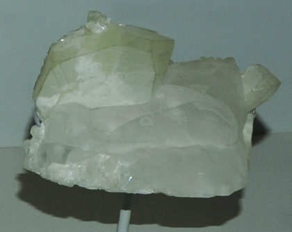
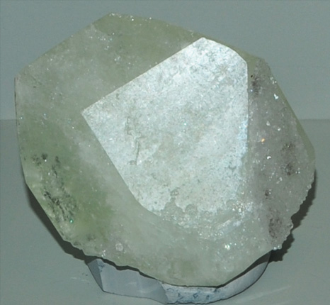

These samples of datolite are displayed in the Smithsonian Museum of Natural History. Datolite is a silicate mineral of boron and calcium with the composition CaBSiO4(OH). The sample at left is about 12 cm across and is described as datolite with quartz.
This datolite sample is described as datolite with calcite. It is about 8cm across and is from Great Notch, New Jersey.


This datolite crystal is about 7 cm across and is described as datolite with quartz. It is from Lane quarry, Westfield, Massachusetts.